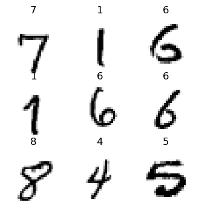
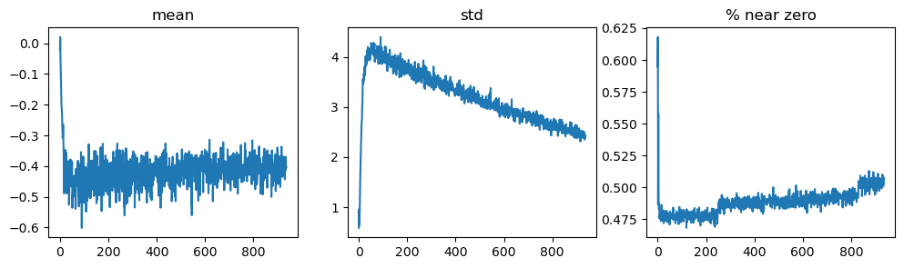
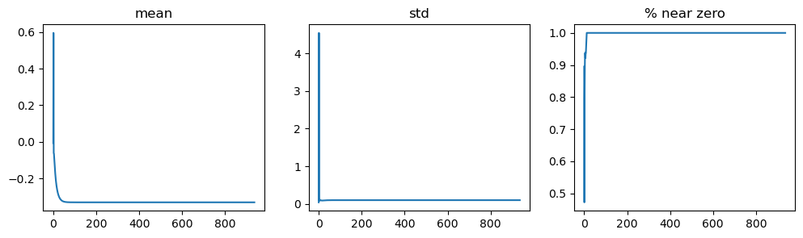
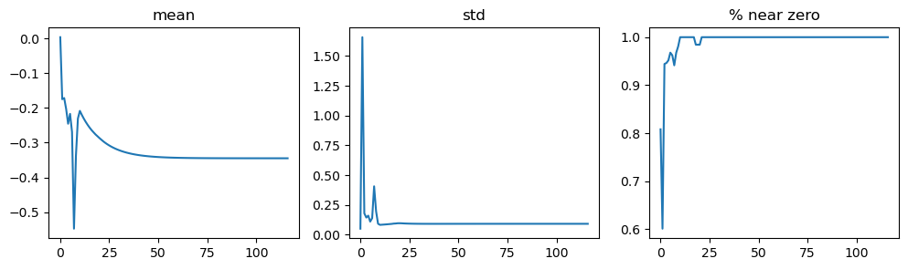
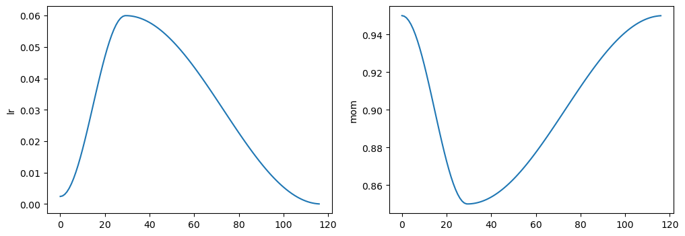
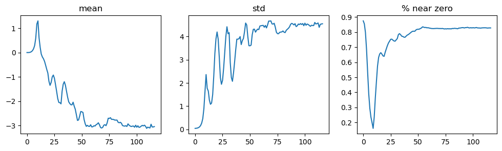
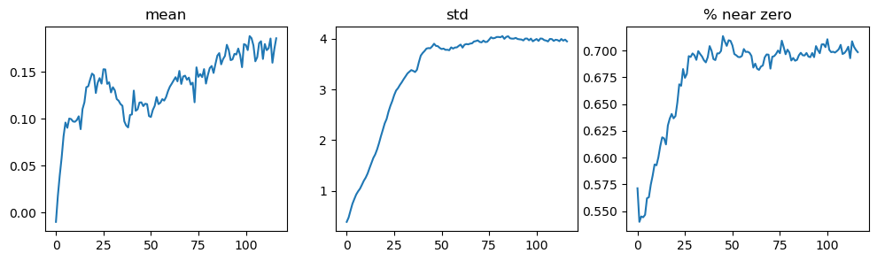

Show code cell source
#hide
from fastai.vision.all import *
matplotlib.rc('image', cmap='Greys')
Redes Neuronales Convolucionales#
En esta sección, profundizaremos en los fundamentos de las convoluciones y construiremos una Red Neuronal Convolucional (CNN) desde cero. Las CNN son herramientas muy potentes para el reconocimiento de imágenes, especialmente efectivas en la captura de jerarquías espaciales dentro de las mismas. Exploraremos la mecánica de las convoluciones, discutiremos sobre kernels y mapas de características, y avanzaremos gradualmente hacia estrategias de entrenamiento que estabilicen el aprendizaje y mejoren el rendimiento.
Introducción a las Convoluciones#
Uno de los conceptos más influyentes en el aprendizaje automático basado en imágenes es la extracción de características: identificar las partes esenciales de los datos que ayudan a distinguir entre clases.
Una característica es una versión transformada de los datos que facilita modelar los patrones.
En imágenes, una característica puede representar elementos visualmente distintivos como bordes, texturas y patrones. Por ejemplo, diferenciar el número 7 del número 3 implica identificar una línea horizontal cerca de la parte superior (7) y distinguirla de una estructura más curva (3). La presencia y orientación de líneas o curvas son características vitales.
Así, en lugar de trabajar directamente con los valores de píxeles crudos, podemos aprovechar las convoluciones para resaltar estas características, permitiendo que el modelo “vea” partes de la imagen que son útiles para la clasificación.
¿Qué es una Convolución?#
Una convolución es una operación matemática que toma una imagen de entrada y le aplica un kernel, produciendo un mapa de características que resalta estructuras específicas (bordes, texturas) en la imagen.
Matemáticamente, para una imagen 2D \( I \) y un kernel 2D \( K \), una convolución \( S \) en el píxel \((i, j)\) se define como:
donde:
\( I(i+m, j+n) \) es el valor del píxel en la posición \((i+m, j+n)\) en la imagen de entrada,
\( K(m, n) \) es el valor del kernel en \((m, n)\),
\( k \) es la mitad del ancho del kernel (para un kernel de 3×3, \( k=1 \)).
El kernel es una pequeña matriz, típicamente de 3×3, que se desliza por la imagen. En cada ubicación, multiplica sus valores con los valores correspondientes en la región 3×3 de la imagen y suma el resultado, creando un valor en el mapa de características de salida.
Ejemplo: Detección de Bordes#
Consideremos un kernel de detección de bordes como:
Aplicar este kernel a una región de una imagen enfatizará las zonas donde los valores de píxeles cambian bruscamente, ayudando a detectar bordes. Esta capacidad de resaltar características específicas es lo que hace que las convoluciones sean tan poderosas.
Convolución en Acción#
Realicemos una convolución en un pequeño fragmento de una imagen. Comenzamos creando una matriz kernel simple de 3×3:
¿Quieres que continúe con la traducción de la parte práctica (aplicando la convolución en un patch con código en PyTorch/Numpy) también?
import torch
# Define a 3x3 kernel for edge detection
edge_kernel = torch.tensor([
[-1.0, -1.0, -1.0],
[-1.0, 8.0, -1.0],
[-1.0, -1.0, -1.0]
])
# Example image as a tensor (7x7 grayscale image)
image = torch.tensor([
[0, 0, 0, 0, 0, 0, 0],
[0, 255, 255, 255, 255, 255, 0],
[0, 255, 0, 0, 0, 255, 0],
[0, 255, 0, 0, 0, 255, 0],
[0, 255, 0, 0, 0, 255, 0],
[0, 255, 255, 255, 255, 255, 0],
[0, 0, 0, 0, 0, 0, 0]
], dtype=torch.float32)
Cálculo de la salida de la convolución#
El kernel se deslizará sobre la imagen de 7×7. En cada paso, se calculará la suma de la multiplicación elemento a elemento entre el kernel y la región 3×3 de la imagen.
Por ejemplo, si el kernel está centrado sobre la esquina superior izquierda de la región con valor 255 en la imagen, calculamos:
# Reshape for convolution (add batch and channel dimensions)
image = image.unsqueeze(0).unsqueeze(0) # Shape: (1, 1, 7, 7)
edge_kernel = edge_kernel.unsqueeze(0).unsqueeze(0) # Shape: (1, 1, 3, 3)
# Apply convolution
output = F.conv2d(image, edge_kernel, padding=0)
print(output[0, 0]) # Display the output
tensor([[ 1530., 1275., 1530., 1275., 1530.],
[ 1275., -1275., -765., -1275., 1275.],
[ 1530., -765., 0., -765., 1530.],
[ 1275., -1275., -765., -1275., 1275.],
[ 1530., 1275., 1530., 1275., 1530.]])
Mira la forma del resultado.
Si la imagen original tiene una altura h y un ancho w, ¿cuántas ventanas de 3×3 podemos encontrar? Como puedes ver en el ejemplo, hay h-2 por w-2 ventanas, por lo que la imagen resultante tiene una altura de h-2 y un ancho de w-2.
Las convoluciones están en el corazón de las CNNs, ayudando a crear capas de mapas de características cada vez más abstractos que capturan la información esencial necesaria para un reconocimiento de imágenes efectivo.
Convoluciones en PyTorch#
Las convoluciones son una operación fundamental en visión por computador, y PyTorch proporciona soporte optimizado para ellas con la función F.conv2d. Esta función forma parte del módulo torch.nn.functional, que fastai importa como F. Según la documentación de PyTorch, F.conv2d requiere dos parámetros principales:
input: un tensor de forma(minibatch, in_channels, iH, iW), dondeiHyiWrepresentan la altura y el ancho de la imagen de entrada.weight: un tensor de filtros (kernels) de forma(out_channels, in_channels, kH, kW), dondekHykWson la altura y el ancho del kernel.
Aquí tienes un ejemplo de código de una convolución 2D simple sobre un lote de imágenes en escala de grises con PyTorch:
import torch
import torch.nn.functional as F
# Example input tensor (batch of 1 grayscale 4x4 image)
input_tensor = torch.tensor([[[[1, 2, 0, 1],
[0, 1, 3, 1],
[1, 2, 0, 2],
[0, 1, 1, 0]]]], dtype=torch.float32)
# 3x3 kernel (filter) for convolution
kernel = torch.tensor([[[[1, 0, -1],
[1, 0, -1],
[1, 0, -1]]]], dtype=torch.float32)
# Apply convolution
output = F.conv2d(input_tensor, kernel)
print(output)
tensor([[[[-1., 1.],
[-3., 1.]]]])
Strides y Padding#
Para controlar el tamaño del mapa de características de salida, usamos padding y strides.
Padding nos permite mantener el mismo tamaño de salida que la entrada añadiendo píxeles extra (normalmente ceros) alrededor de los bordes. Esto es especialmente útil para asegurarnos de que la salida de la convolución tenga las mismas dimensiones espaciales que la entrada.
Strides definen cuántos píxeles deslizamos el kernel sobre la entrada en cada paso. Por ejemplo, un stride de 1 mueve el kernel un píxel a la vez, mientras que un stride de 2 lo mueve dos píxeles a la vez, reduciendo efectivamente el tamaño de la imagen (downsampling).
Veamos cómo estos parámetros afectan el tamaño de la salida con algo de código y diagramas.
Ejemplo de Padding#
Aquí hay un ejemplo que añade padding a la imagen para asegurarse de que la salida tenga el mismo tamaño que la entrada:
# Apply convolution with padding
output_with_padding = F.conv2d(input_tensor, kernel, padding=1)
print("Output with padding:")
print(output_with_padding)
Output with padding:
tensor([[[[-3., -2., 1., 3.],
[-5., -1., 1., 3.],
[-4., -3., 1., 4.],
[-3., 0., 1., 1.]]]])
Este código añade un borde de 1 píxel alrededor del tensor de entrada, permitiendo que el kernel se aplique en todas las regiones sin reducir el tamaño de la salida.
Diagrama de Padding con Kernel 3×3 y Entrada 4×4:
Input (4x4):
[1 2 0 1]
[0 1 3 1]
[1 2 0 2]
[0 1 1 0]
Kernel (3x3):
[1 0 -1]
[1 0 -1]
[1 0 -1]
Output con Padding (4x4):
[-3 -4 1 3]
[ 0 -3 -1 1]
[ 2 1 2 1]
[ 1 0 -1 -1]
Este padding permite que el kernel se aplique en todos los bordes de la entrada sin reducir el tamaño del mapa de características.
Ejemplo de Stride#
Si queremos reducir las dimensiones espaciales de la salida, podemos aplicar un stride mayor que 1. Aquí un ejemplo con stride de 2:
# Aplicar convolución con stride de 2
output_with_stride = F.conv2d(input_tensor, kernel, stride=2)
print("Output con stride 2:")
print(output_with_stride)
En este caso, el kernel se desplaza dos píxeles a la vez sobre la entrada, dando como resultado un mapa de características más pequeño.
Diagrama de Convolución con Stride 2 usando Kernel 3×3 sobre Entrada 4×4:
Input (4x4):
[1 2 0 1]
[0 1 3 1]
[1 2 0 2]
[0 1 1 0]
Kernel (3x3):
[1 0 -1]
[1 0 -1]
[1 0 -1]
Output con Stride-2 (2x2):
[-1 3]
[ 1 2]
Fórmula General para el Tamaño de Salida#
Para cada dimensión (alto o ancho), el tamaño de la salida out_dim está dado por la fórmula:
donde:
input_dimes el tamaño de la entrada en esa dimensión,paddinges la cantidad de píxeles añadidos a cada lado,kernel_sizees el tamaño del kernel (filtro),stridees el paso utilizado en la convolución.
Construcción de una Red Neuronal Convolucional#
Al construir una CNN buscamos aprender automáticamente características efectivas de las imágenes en lugar de diseñar filtros manualmente. Específicamente, optimizaremos los valores de los kernels convolucionales mediante Stochastic Gradient Descent (SGD), permitiendo que el modelo aprenda directamente las características más informativas a partir de los datos.
Este enfoque es crucial, ya que ciertos patrones complejos (especialmente en capas más profundas) son difíciles de diseñar manualmente. Cuando usamos convoluciones en lugar de (o además de) capas totalmente conectadas, construimos lo que se conoce como una Red Neuronal Convolucional (CNN).
Show code cell source
path = untar_data(URLs.MNIST_SAMPLE)
mnist = DataBlock((ImageBlock(cls=PILImageBW), CategoryBlock),
get_items=get_image_files,
splitter=GrandparentSplitter(),
get_y=parent_label)
dls = mnist.dataloaders(path)
xb,yb = first(dls.valid)
xb.shape
torch.Size([64, 1, 28, 28])
Creando una CNN#
Empezemos con una red básica:
broken_cnn = sequential(
nn.Conv2d(1,30, kernel_size=3, padding=1),
nn.ReLU(),
nn.Conv2d(30,1, kernel_size=3, padding=1)
)
Aquí,
nn.Conv2des el módulo de PyTorch que inicializa capas convolucionales con pesos aprendidos. Esto resulta más conveniente queF.conv2d(que realiza las operaciones de convolución directamente), ya que crea y gestiona automáticamente las matrices de pesos necesarias para la optimización mediante SGD.
En este modelo, no especificamos el tamaño de entrada como 28×28 porque, a diferencia de las capas totalmente conectadas que requieren un peso distinto para cada píxel, las capas convolucionales aplican los mismos pesos en todos los píxeles. Por ello, solo necesitamos definir el número de canales de entrada/salida y el tamaño del kernel.
Veamos ahora la forma de la salida tras aplicar broken_cnn a un batch:
¿Quieres que lo muestre con código en PyTorch y que calculemos explícitamente las dimensiones de salida paso a paso?
broken_cnn(xb).shape
torch.Size([64, 1, 28, 28])
Este modelo, sin embargo, devuelve un activation map de 28×28 en lugar de una única salida de clasificación por imagen. Para corregir esto, necesitamos reducir las dimensiones espaciales hasta un tamaño 1×1. Una solución es utilizar múltiples convoluciones con stride=2, reduciendo el mapa de activaciones a la mitad en cada paso:
28×28 → 14×14 (tras la primera convolución con stride=2)
14×14 → 7×7 (tras la segunda convolución con stride=2)
7×7 → 4×4 → 2×2 → 1×1 (repitiendo convoluciones con stride=2)
Definición de las capas convolucionales#
Construyamos una función para simplificar la adición de capas con convolución de stride=2, tamaño de kernel y activación opcional:
def conv(ni, nf, ks=3, act=True):
res = nn.Conv2d(ni, nf, stride=2, kernel_size=ks, padding=ks//2)
if act: res = nn.Sequential(res, nn.ReLU())
return res
La refactorización de esta forma hace que el código sea más legible y ayuda a evitar inconsistencias al construir redes neuronales.
A medida que reducimos las dimensiones espaciales con convoluciones de stride=2, también aumentaremos el número de canales para mantener la capacidad del modelo. Típicamente, conforme disminuye la cuadrícula de entrada, el número de feature maps (o canales) debería aumentar para permitir que el modelo capture patrones más ricos y abstractos. De esta manera, evitamos una reducción en la capacidad computacional a medida que la red se hace más profunda.
Aquí tienes un ejemplo sencillo de CNN:
simple_cnn = sequential(
conv(1 ,4), #14x14
conv(4 ,8), #7x7
conv(8 ,16), #4x4
conv(16,32), #2x2
conv(32,2, act=False), #1x1
Flatten(),
)
Ahora, la salida del modelo son dos activaciones que corresponden a las dos clases que queremos predecir.
simple_cnn(xb).shape
torch.Size([64, 2])
Creando el Learner#
Vamos a crear un Learner para entrenar este modelo:
learn = Learner(dls, simple_cnn, loss_func=F.cross_entropy, metrics=accuracy)
Para ver exáctamente lo que va a pasar nel modelo, podemos usar el método summary:
learn.summary()
Sequential (Input shape: 64 x 1 x 28 x 28)
============================================================================
Layer (type) Output Shape Param # Trainable
============================================================================
64 x 4 x 14 x 14
Conv2d 40 True
ReLU
____________________________________________________________________________
64 x 8 x 7 x 7
Conv2d 296 True
ReLU
____________________________________________________________________________
64 x 16 x 4 x 4
Conv2d 1168 True
ReLU
____________________________________________________________________________
64 x 32 x 2 x 2
Conv2d 4640 True
ReLU
____________________________________________________________________________
64 x 2 x 1 x 1
Conv2d 578 True
____________________________________________________________________________
64 x 2
Flatten
____________________________________________________________________________
Total params: 6,722
Total trainable params: 6,722
Total non-trainable params: 0
Optimizer used: <function Adam at 0x00000211C6C9BBA0>
Loss function: <function cross_entropy at 0x00000211BC6F40E0>
Callbacks:
- TrainEvalCallback
- CastToTensor
- Recorder
- ProgressCallback
Observa que la salida de la capa final Conv2d es 64x2x1x1. Necesitamos eliminar esos ejes extra 1x1; eso es lo que hace Flatten. Es básicamente lo mismo que el método squeeze de PyTorch, pero en forma de módulo.
learn.fit_one_cycle(2, 0.01)
| epoch | train_loss | valid_loss | accuracy | time |
|---|---|---|---|---|
| 0 | 0.061466 | 0.031233 | 0.987733 | 00:18 |
| 1 | 0.022755 | 0.019546 | 0.994603 | 00:15 |
Comprendiendo la Aritmética de las Convoluciones#
Al examinar el resumen del modelo se observa una forma de entrada de 64x1x28x28, donde:
64es el tamaño del lote (batch size)1es el número de canales de entrada (por ejemplo, imágenes en escala de grises)28x28son la altura y el ancho de las imágenes de entrada.
Analicemos la primera capa:
m = learn.model[0]
m
Sequential(
(0): Conv2d(1, 4, kernel_size=(3, 3), stride=(2, 2), padding=(1, 1))
(1): ReLU()
)
La primera capa convolucional tiene 1 canal de entrada, 4 canales de salida y un kernel de tamaño 3×3. Revisando sus pesos:
m[0].weight.shape
torch.Size([4, 1, 3, 3])
Los 40 parámetros incluyen 36 para el kernel (4*1*3*3=36) y 4 para el sesgo (bias). Cada canal tiene un parámetro de sesgo:
m[0].bias.shape
torch.Size([4])
Cada convolución con stride 2 reduce el tamaño de la rejilla, mientras que el número de filtros aumenta para mantener la capacidad general. Por ejemplo, la primera capa mapea una entrada de 28×28 a una salida de 14×14, y la siguiente capa mapea de 14×14 a 7×7.
El cálculo del total de operaciones en cada capa es el siguiente:
Número de multiplicaciones por mapa de características: \(H \times W \times C \times kH \times kW\)
Donde:
\(H, W\) son la altura y la anchura del mapa de activación
\(C\) es el número de canales de salida
\(kH, kW\) son la altura y la anchura del kernel
Por ejemplo, si el mapa de activación de entrada es de 14×14 con 4 canales de salida y un kernel de 3×3, el cálculo sería:
Al duplicar el número de canales tras cada operación con stride 2, mantenemos un cómputo consistente a medida que reducimos el tamaño de la rejilla. Este diseño permite que las capas más profundas extraigan características cada vez más abstractas y con mayor riqueza semántica, equilibrando la capacidad y la eficiencia en la red.
Mejorar la Estabilidad del Entrenamiento#
Después de haber reconocido correctamente los dígitos 3 y 7, abordemos ahora una tarea más desafiante: reconocer los 10 dígitos completos del conjunto de datos MNIST.
path = untar_data(URLs.MNIST)
Path.BASE_PATH = path
path.ls()
(#2) [Path('testing'),Path('training')]
Los datos están organizados en carpetas de training y testing. Usamos GrandparentSplitter para dividir los datos correctamente, ya que los nombres de las carpetas difieren de las etiquetas predeterminadas train y valid.
Para facilitar la experimentación con distintos tamaños de batch, definimos una función get_dls:
def get_dls(bs=64):
return DataBlock(
blocks=(ImageBlock(cls=PILImageBW), CategoryBlock),
get_items=get_image_files,
splitter=GrandparentSplitter('training','testing'),
get_y=parent_label,
batch_tfms=Normalize()
).dataloaders(path, bs=bs)
dls = get_dls()
Antes de continuar, es buena práctica inspeccionar visualmente los datos para asegurarnos de que están correctos:
dls.show_batch(max_n=9, figsize=(4,4))

Una CNN Básica#
Empecemos construyendo una red neuronal convolucional (CNN) básica como nuestro modelo de referencia. Podemos reutilizar la función conv que vimos antes, lo que facilita la creación de capas convolucionales con opciones configurables.
def conv(ni, nf, ks=3, act=True):
res = nn.Conv2d(ni, nf, stride=2, kernel_size=ks, padding=ks//2)
if act: res = nn.Sequential(res, nn.ReLU())
return res
Aumentando la Complejidad del Modelo#
Dado que ahora nuestra tarea consiste en distinguir entre 10 clases en lugar de solo dos, probablemente necesitemos un modelo más complejo con filtros adicionales. En general, duplicar el número de filtros en cada capa convolucional con stride 2 es beneficioso, ya que compensa la reducción en las dimensiones espaciales.
Sin embargo, hay un problema sutil a considerar. En las redes convolucionales, la extracción de características es efectiva solo si el número de salidas en cada capa es significativamente menor que el número de entradas. Por ejemplo, si usamos un kernel de 3×3 (que cubre 9 píxeles) y generamos solo cuatro filtros de salida, el modelo aún se verá obligado a comprimir la información de manera significativa. Pero si aumentamos el número de filtros sin ajustar el tamaño del kernel, corremos el riesgo de tener muy pocas entradas por característica de salida, reduciendo la capacidad del modelo para aprender de manera efectiva.
Para abordar esto, incrementamos el tamaño del kernel en la primera capa a 5×5, cubriendo 25 píxeles. Esta configuración proporciona una entrada más sustancial para cada característica de salida, mejorando la extracción de características.
def simple_cnn():
return sequential(
conv(1 ,8, ks=5), #14x14
conv(8 ,16), #7x7
conv(16,32), #4x4
conv(32,64), #2x2
conv(64,10, act=False), #1x1
Flatten(),
)
Analizando el Entrenamiento del Modelo con Estadísticas de Activación#
Para comprender mejor el comportamiento de nuestro modelo durante el entrenamiento, podemos usar el callback ActivationStats. Este callback registra la media, la desviación estándar y el histograma de las activaciones en cada capa. Examinar estas estadísticas nos permite detectar problemas como valores de activación que se vuelven demasiado pequeños (cercanos a cero) o demasiado grandes, ambos casos pueden conducir a inestabilidad en el entrenamiento.
from fastai.callback.hook import *
def fit(epochs=1):
learn = Learner(dls, simple_cnn(), loss_func=F.cross_entropy,
metrics=accuracy, cbs=ActivationStats(with_hist=True))
learn.fit(epochs, 0.06)
return learn
learn = fit()
Este intento inicial puede dar lugar a un entrenamiento deficiente. Vamos a diagnosticar por qué examinando las estadísticas de activación. ActivationStats proporciona una utilidad, plot_layer_stats(idx), para visualizar la media, la desviación estándar y el porcentaje de activaciones cercanas a cero en cada capa. Aquí tienes un ejemplo para la primera capa:
learn.activation_stats.plot_layer_stats(0)

Idealmente, la media y la desviación estándar deberían mantenerse estables o seguir una tendencia suave. Un porcentaje alto de activaciones cercanas a cero indica que una parte significativa del modelo está inactiva o contribuye muy poco, lo cual puede propagarse a través de las capas y empeorar en los niveles más profundos.
Ahora revisemos la penúltima capa:
learn.activation_stats.plot_layer_stats(-2)

Como era de esperar, la inestabilidad y las activaciones nulas suelen aumentar hacia el final de la red, lo que sugiere que algunas capas están “muertas” y transmiten valores cero de manera efectiva hacia adelante. Este problema se acumula a lo largo de las capas, lo que dificulta el entrenamiento.
Tamaño de Batch y Estabilidad del Gradiente#
Incrementar el tamaño del batch es una técnica común para estabilizar el entrenamiento. Matemáticamente, un batch más grande proporciona una mejor aproximación del gradiente poblacional al reducir la varianza de la estimación del gradiente \(\nabla L\), donde \(L\) es la función de pérdida. Formalmente, si el gradiente verdadero de la pérdida \(L\) sobre todo el conjunto de datos se representa como \(\nabla L\), entonces el gradiente calculado con un mini-batch \(B\) de tamaño \(N\) puede escribirse como:
donde \((x_i, y_i)\) son los pares de datos y etiquetas en el batch. A medida que \(N\) aumenta, \(\nabla L_B\) converge hacia \(\nabla L\), lo que en general resulta en actualizaciones de gradiente más estables. Sin embargo, los batches más grandes reducen el número de actualizaciones de parámetros por época, lo que puede ralentizar la convergencia en ciertos casos.
Usemos una batch size de 512:
dls = get_dls(512)
learn = fit()
| epoch | train_loss | valid_loss | accuracy | time |
|---|---|---|---|---|
| 0 | 2.308856 | 2.304741 | 0.113500 | 01:10 |
Veamos cómo se comporta la penúltima capa:
learn.activation_stats.plot_layer_stats(-2)

De nuevo, la mayoría de nuestras activaciones están cerca de cero. Veamos qué más podemos hacer para mejorar la estabilidad del entrenamiento.
Entrenamiento 1cycle: Tasas de Aprendizaje y Momento Dinámicos#
El entrenamiento 1cycle, introducido en “Super-Convergence” de Smith, consiste en un esquema de tasa de aprendizaje de dos fases para estabilizar y acelerar el entrenamiento. La tasa de aprendizaje \( \alpha \) sigue una trayectoria que primero aumenta durante una fase de warmup y luego disminuye durante una fase de annealing, describiendo así un ciclo completo. Matemáticamente, este esquema se expresa como:
donde \(t\) es la iteración actual, \(T\) es el punto intermedio, y \(\alpha_{\text{min}}\) y \(\alpha_{\text{max}}\) son las tasas de aprendizaje mínima y máxima, respectivamente. Este esquema cíclico permite a los modelos evitar mínimos locales pobres, aprovechando tasas de aprendizaje altas para una convergencia rápida y tasas bajas para un ajuste fino.
El entrenamiento 1cycle nos permite usar una tasa de aprendizaje máxima mucho mayor que en otros métodos, lo que aporta dos beneficios:
Con tasas más altas, el entrenamiento es más rápido —de ahí la super-convergencia.
Con tasas más altas, el sobreajuste disminuye porque se evitan mínimos locales pronunciados, llegando a zonas más suaves (y por tanto más generalizables) de la función de pérdida.
El segundo punto es sutil pero importante: un modelo que generaliza bien es aquel cuya pérdida no cambia mucho ante pequeñas variaciones en la entrada. Si un modelo entrena durante bastante tiempo con una tasa de aprendizaje alta y logra mantener una pérdida baja, es porque ha encontrado una región que generaliza bien, ya que está “saltando” bastante entre lotes (esa es, en esencia, la definición de una tasa alta). El problema es que, como ya discutimos, simplemente empezar con una tasa muy alta tiende a provocar pérdidas divergentes en lugar de mejorarlas.
Por ello, no comenzamos directamente con una tasa elevada. Empezamos con una tasa baja, donde la pérdida no diverge, y permitimos que el optimizador explore gradualmente regiones más suaves aumentando progresivamente la tasa de aprendizaje.
Una vez que hemos encontrado una región estable y suave, queremos localizar la mejor parte de ella, lo que implica reducir de nuevo la tasa de aprendizaje. Esta es la razón de que el entrenamiento 1cycle tenga una fase inicial de warmup y otra final de cooldown. Muchos investigadores han comprobado que, en la práctica, este enfoque produce modelos más precisos y se entrena más rápido.
Podemos usar 1cycle en fastai llamando a fit_one_cycle:
def fit(epochs=1, lr=0.06):
learn = Learner(dls, simple_cnn(), loss_func=F.cross_entropy,
metrics=accuracy, cbs=ActivationStats(with_hist=True))
learn.fit_one_cycle(epochs, lr)
return learn
learn = fit()
| epoch | train_loss | valid_loss | accuracy | time |
|---|---|---|---|---|
| 0 | 0.210347 | 0.074806 | 0.974900 | 01:09 |
¡Por fin estamos avanzando! Ahora obtenemos una exactitud razonable.
Podemos visualizar la tasa de aprendizaje y el momento a lo largo del entrenamiento llamando a plot_sched sobre learn.recorder.
learn.recorder (como sugiere el nombre) registra todo lo que ocurre durante el entrenamiento, incluidas las pérdidas, métricas e hiperparámetros como la tasa de aprendizaje y el momento:
learn.recorder.plot_sched()

learn.activation_stats.plot_layer_stats(-2)

El porcentaje de pesos cercanos a cero está mejorando bastante, aunque sigue siendo bastante alto.
Esto muestra un ejemplo clásico de “mal entrenamiento”. Empezamos con casi todas las activaciones en cero. Luego, en los primeros lotes vemos cómo el número de activaciones distintas de cero aumenta exponencialmente. Pero se va demasiado lejos y ¡colapsa! Casi parece como si el entrenamiento empezara de nuevo desde cero.
Es mucho mejor si el entrenamiento puede ser fluido desde el principio. Los ciclos de aumento exponencial y posterior colapso tienden a dar lugar a muchas activaciones cercanas a cero, lo que resulta en un entrenamiento lento y malos resultados finales. Una forma de resolver este problema es utilizar batch normalization.
Normalización por Lotes (Batch Normalization)#
La normalización por lotes (BatchNorm) mitiga el problema del cambio de covariadas interno (internal covariate shift), es decir, la variación en la distribución de las entradas de las capas durante el entrenamiento. Al normalizar las activaciones dentro de cada mini-lote, BatchNorm ayuda a estabilizar y acelerar el entrenamiento.
Matemáticamente, para cada mini-lote, BatchNorm calcula la media y varianza de las activaciones \( \mu_B \) y \( \sigma_B^2 \), y luego normaliza cada activación \( x_i \) como:
donde \( \epsilon \) es una constante pequeña añadida para la estabilidad numérica. Esta activación normalizada \( \hat{x}_i \) se escala y desplaza mediante parámetros aprendibles \(\gamma\) y \(\beta\):
Los parámetros \(\gamma\) y \(\beta\) permiten que el modelo mantenga cualquier media y desviación estándar que considere óptima en cada capa, aumentando así su flexibilidad y capacidad. Durante la inferencia, se usan las medias y varianzas acumuladas (promedios móviles calculados durante el entrenamiento) para una normalización consistente.
def conv(ni, nf, ks=3, act=True):
layers = [nn.Conv2d(ni, nf, stride=2, kernel_size=ks, padding=ks//2)]
if act: layers.append(nn.ReLU())
layers.append(nn.BatchNorm2d(nf))
return nn.Sequential(*layers)
learn = fit()
| epoch | train_loss | valid_loss | accuracy | time |
|---|---|---|---|---|
| 0 | 0.133975 | 0.058637 | 0.985600 | 01:10 |
¡Esto es aún mejor! Veamos las estadísticas de activación:
learn.activation_stats.plot_layer_stats(-2)

Esto se acerca más a lo que esperamos: un desarrollo suave de las activaciones, sin “colapsos”. Esto nos da una pista de por qué BatchNorm ha tenido tanto éxito, hasta el punto de que lo encontramos (o alguna variante muy similar) en casi todas las redes neuronales modernas.
BatchNorm actúa también como una forma de regularización, introduciendo una ligera estocasticidad en las activaciones del modelo durante el entrenamiento, ya que las estadísticas de cada mini-lote varían levemente. Esta aleatoriedad hace que el modelo sea más robusto a pequeñas variaciones, lo que conduce a una mejor generalización. Se ha observado empíricamente que BatchNorm a menudo mejora el rendimiento en los conjuntos de prueba y reduce el sobreajuste en comparación con redes que no lo incluyen.
BatchNorm acts as a form of regularization by introducing slight stochasticity to the model’s activations during training, as each mini-batch’s statistics vary slightly. This randomness makes the model robust to small variations, leading to improved generalization. It has been empirically observed that BatchNorm often leads to better test performance and a reduction in overfitting compared to networks that do not include it.
De Capas Totalmente Conectadas a Convoluciones#
Las redes neuronales totalmente conectadas (MLP) funcionan bien para datos tabulares, donde cada fila corresponde a un ejemplo y cada columna a una característica. En este contexto, no hacemos suposiciones sobre cómo interactúan las características; todas las dependencias deben aprenderse directamente.
Sin embargo, cuando pasamos a datos perceptuales de alta dimensión, como imágenes o audio, este enfoque se desmorona rápidamente. Pensemos en la clasificación de imágenes. Supongamos que queremos distinguir gatos de perros usando fotografías de \(1000 \times 1000\) píxeles (un megapíxel). Aplanar la imagen produce un millón de características de entrada. Incluso si reducimos a solo \(1000\) unidades ocultas, una capa totalmente conectada requeriría
solo para una capa. Escalar tal red exigiría conjuntos de datos masivos, optimización distribuida en muchas GPU y muchísima paciencia. Y en la práctica, los modelos efectivos requerirían capas ocultas aún más grandes, empujando el número de parámetros a miles de millones.
Los humanos, por supuesto, reconocen gatos y perros sin esfuerzo. Las computadoras también lo logran con los modelos modernos de aprendizaje profundo. La resolución de esta aparente contradicción es que las imágenes no son solo vectores arbitrarios: tienen estructura. Los píxeles vecinos están relacionados, los objetos aparecen en distintas ubicaciones pero mantienen su identidad, y los patrones se repiten en el espacio. Las redes neuronales convolucionales (CNN) fueron diseñadas específicamente para aprovechar esta estructura.
Invariancia: Por Qué la Ubicación No Debería Importar#
Imagina intentar detectar una manzana en una imagen. La manzana se ve igual esté arriba o abajo en la imagen. Queremos un detector que lo reconozca independientemente de la ubicación. Este es el principio de la invariancia por traslación (o más precisamente, equivarianza por traslación en capas intermedias).
Los humanos lo explotamos de forma natural: podemos reconocer formas incluso si aparecen desplazadas. Las CNN codifican esta propiedad escaneando la imagen con pequeños filtros que aplican los mismos pesos en todas las posiciones. Así, en lugar de aprender un parámetro distinto para cada posible conexión píxel–unidad, reutilizamos el mismo filtro en todo el espacio.
Surgen tres principios rectores:
Invariancia por traslación: desplazar la entrada debe corresponder a desplazar la representación, no a cambiarla fundamentalmente.
Localidad: las primeras características deben depender solo de regiones locales, no de toda la imagen a la vez.
Jerarquía: las capas más profundas combinan características locales en representaciones más amplias y abstractas.
Juntos, estos principios permiten que las CNN aprendan modelos efectivos con muchos menos parámetros.
Restringiendo el MLP#
Para ver cómo surgen las convoluciones, partamos de una capa totalmente conectada. Supongamos que la imagen de entrada es \(\mathbf{X}\) y la representación oculta es \(\mathbf{H}\), ambas tratadas como matrices 2D de la misma forma. Entonces, cada unidad oculta \([\mathbf{H}]_{i,j}\) depende de todos los píxeles de entrada:
donde \(\mathsf{W}\) es un tensor de pesos de cuarto orden y \(\mathbf{U}\) contiene sesgos.
Esto ya es irreal: para una imagen de \(1000 \times 1000\), \(\mathsf{W}\) contiene \(10^{12}\) parámetros, muy por encima de los límites del hardware actual.
Paso 1: Invariancia por Traslación#
Si exigimos que al desplazar \(\mathbf{X}\) simplemente se desplace \(\mathbf{H}\), entonces los pesos no pueden depender de \((i,j)\) explícitamente. En cambio, los pesos dependen solo de los desplazamientos \((a,b)\) relativos a la ubicación actual:
Aquí \(\mathbf{V}\) se comparte en toda la imagen, y \(u\) es un sesgo global. Esta es exactamente la definición de una convolución. Ya con esto, el número de parámetros cae drásticamente, pues ya no necesitamos un tensor de pesos distinto para cada ubicación.
Paso 2: Localidad#
Ahora imponemos localidad: los píxeles cercanos son los más relevantes. Esto significa que los desplazamientos se limitan a un vecindario pequeño:
Esta es la capa convolucional, donde \(\Delta\) controla el tamaño del campo receptivo. Típicamente, \(\Delta \leq 3\), por lo que los filtros son pequeños (\(3\times 3\) o \(5\times 5\)). El número de parámetros ahora se reduce de billones a apenas unas decenas por filtro.
Apilando muchas de estas capas, las redes más profundas capturan un contexto más amplio: los pequeños filtros se combinan en campos receptivos más grandes, lo que permite reconocer estructuras globales a partir de bloques locales.
Convoluciones y Correlación Cruzada#
Matemáticamente, la convolución entre funciones \(f,g:\mathbb{R}^d\to\mathbb{R}\) se define como
En forma discreta 2D:
En las librerías de deep learning, sin embargo, la operación suele implementarse como correlación cruzada, que reemplaza \((i-a,j-b)\) por \((i+a,j+b)\). La diferencia es solo un volteo en los índices, y en la práctica ambas se llaman “convolución”.
Por Qué Funciona#
Eficiencia en parámetros: miles de millones de parámetros se reducen a unos pocos miles.
Sesgo inductivo: la convolución codifica la invariancia por traslación y la localidad, propiedades que se cumplen en imágenes naturales.
Aprendizaje jerárquico: los filtros superficiales capturan bordes, los más profundos los combinan en texturas, formas y objetos semánticos.
El costo es que imponemos ciertas suposiciones (p. ej., invariancia por traslación). Si estas suposiciones fallan, las CNN pueden tener problemas. Pero en visión y muchas tareas perceptuales, se alinean bien con la realidad, lo que hace a las CNN la columna vertebral de la visión por computadora moderna.